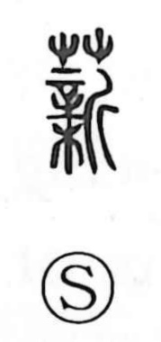

薪

Kun: takigi | On: shin
firewood ・ brushwood
Explanation
Shirakawa reads 薪 as a phono-semantic character: the grass/plant element flags plant material, while 新 supplies the sound shin and embeds the ritual scene behind the word’s sense. In 新, 辛 is a large handled ritual needle; with it one selects and marks a fresh tree, which is then cut with an axe to make a mortuary tablet. The related graph 親 depicts bowing in reverence before such a newly installed tablet, hence “parent.” Against this background, 薪 first named the leftover wood from preparing those tablets, gathered and burned as takigi during fire festivals. From “firewood used in sacred rites,” the meaning broadened to ordinary firewood and brushwood.